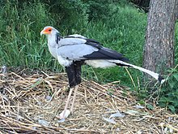
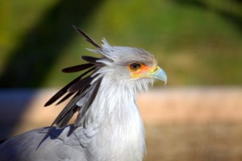

SAGITÁRIDOS
Sagittariidae
Sagittariidae
Sagittarius serpentarius

El secretario (Sagittarius serpentarius) es una especie de ave accipitriforme de la familia Sagittariidae, la única de su familia (Sagittariidae) y de su género (Sagittarius). No se reconocen subespecies. El nombre le viene por su peculiar librea, gris y con las patas negras, y con un copete de plumas como llevaban los secretarios británicos de hace siglos. También se piensa que es una mala traducción francesa de su nombre árabe saqr-et-tair (ave cazadora).
Hábitat y naturaleza

Está ampliamente extendido en África al sur del Sahara. Habita las sabanas africanas desde Somalia hasta Senegal y de Kenia a Sudáfrica.
Es una de las rapaces más características de toda la fauna africana. Es de gran tamaño, aproximadamente un metro de alzada y de hábitos semiterrestres. Se distingue del resto de rapaces por cazar en el suelo y no desde el aire. Recorre a zancadas los herbazales al acecho de presas que van desde saltamontes a culebras y mamíferos de pequeño tamaño, a los que ataca golpeándolos con sus largas patas, provistas de cortos dedos y fuertes garras afiladas.
Es una de las rapaces más características de toda la fauna africana. Es de gran tamaño, aproximadamente un metro de alzada y de hábitos semiterrestres. Se distingue del resto de rapaces por cazar en el suelo y no desde el aire. Recorre a zancadas los herbazales al acecho de presas que van desde saltamontes a culebras y mamíferos de pequeño tamaño, a los que ataca golpeándolos con sus largas patas, provistas de cortos dedos y fuertes garras afiladas.